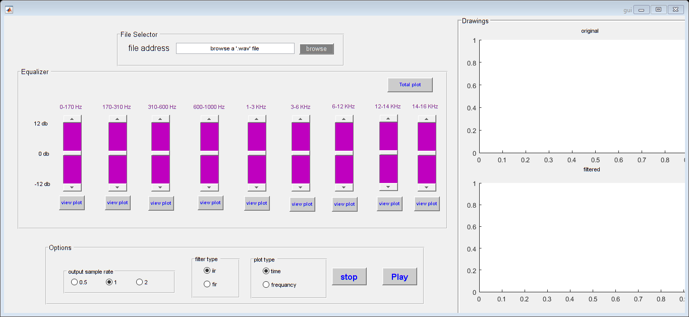

function varargout = gui(varargin) % GUI MATLAB code for gui.fig % GUI, by itself, creates a new GUI or raises the existing % singleton*. % % H = GUI returns the handle to a new GUI or the handle to % the existing singleton*. % % GUI('CALLBACK',hObject,eventData,handles,...) calls the local % function named CALLBACK in GUI.M with the given input arguments. % % GUI('Property','Value',...) creates a new GUI or raises the % existing singleton*. Starting from the left, property value pairs are % applied to the GUI before gui_OpeningFcn gets called. An % unrecognized property name or invalid value makes property application % stop. All inputs are passed to gui_OpeningFcn via varargin. % % *See GUI Options on GUIDE's Tools menu. Choose "GUI allows only one % instance to run (singleton)". % % See also: GUIDE, GUIDATA, GUIHANDLES % Edit the above text to modify the response to help gui % Last Modified by GUIDE v2.5 23-Dec-2018 02:26:36 % Begin initialization code - DO NOT EDIT gui_Singleton = 1; gui_State = struct('gui_Name', mfilename, ... 'gui_Singleton', gui_Singleton, ... 'gui_OpeningFcn', @gui_OpeningFcn, ... 'gui_OutputFcn', @gui_OutputFcn, ... 'gui_LayoutFcn', [] , ... 'gui_Callback', []); if nargin && ischar(varargin{1}) gui_State.gui_Callback = str2func(varargin{1}); end if nargout [varargout{1:nargout}] = gui_mainfcn(gui_State, varargin{:}); else gui_mainfcn(gui_State, varargin{:}); end % End initialization code - DO NOT EDIT % --- Executes just before gui is made visible. function gui_OpeningFcn(hObject, eventdata, handles, varargin) % This function has no output args, see OutputFcn. % hObject handle to figure % eventdata reserved - to be defined in a future version of MATLAB % handles structure with handles and user data (see GUIDATA) % varargin command line arguments to gui (see VARARGIN) % Choose default command line output for gui handles.output = hObject; % Update handles structure guidata(hObject, handles); % UIWAIT makes gui wait for user response (see UIRESUME) % uiwait(handles.figure1); % --- Outputs from this function are returned to the command line. function varargout = gui_OutputFcn(hObject, eventdata, handles) % varargout cell array for returning output args (see VARARGOUT); % hObject handle to figure % eventdata reserved - to be defined in a future version of MATLAB % handles structure with handles and user data (see GUIDATA) % Get default command line output from handles structure varargout{1} = handles.output; %============================================= %======================================================= function play_equalizer(hObject, handles,isFir,sampleRate) global player; %contains all the frequency intervals global yArr; yArr=[170 310 600 1000 3000 6000 12000 14000 16000]; global handl; %the output signal in time domain for each interval global y1; global y2; global y3; global y4; global y5; global y6; global y7; global y8; global y9; %the total output signal in time domain global y10; %the output signal in frequency domain for each interval global yf1; global yf2; global yf3; global yf4; global yf5; global yf6; global yf7; global yf8; global yf9; %the total output signal in frequency domain global yf10; %the original signal global yOriginal; [handles.y,handles.Fs] = audioread(handles.fullpathname); yOriginal = handles.y; plot(handles.y); %getting all the amplification parameters handl(1)=get(handles.b1,'value'); handl(2)=get(handles.b2,'value'); handl(3)=get(handles.b3,'value'); handl(4)=get(handles.b4,'value'); handl(5)=get(handles.b5,'value'); handl(6)=get(handles.b6,'value'); handl(7)=get(handles.b7,'value'); handl(8)=get(handles.b8,'value'); handl(9)=get(handles.b9,'value'); %lowpass filter for the first interval (0 -> 170 HZ) if(isFir) a=fir_low(handles.Fs,yArr(1)); else a=IIR1(handles.Fs,yArr(1)); end y1=handl(1)*filter(a,handles.y,1); %bandpass1 filter for the second interval (170 -> 310 HZ) if(isFir) a=fir_band(handles.Fs,yArr(1),yArr(2)); else a=IIR2(handles.Fs,yArr(1),yArr(2)); end y2=handl( 2 )*filter(a,handles.y,1); %bandpass filter for the third domain (310 -> 600 HZ) if(isFir) a=fir_band(handles.Fs,yArr(2),yArr(3)); else a=IIR2(handles.Fs,yArr(2),yArr(3)); end y3=handl( 3 )*filter(a,handles.y,1); %bandpass filter for the fourth domain (600 -> 1000 HZ) if(isFir) a=fir_band(handles.Fs,yArr(3),yArr(4)); else a=IIR2(handles.Fs,yArr(3),yArr(4)); end y4=handl( 4 )*filter(a,handles.y,1); %bandpass filter for the fifth domain (1 -> 3 KHZ) if(isFir) a=fir_band(handles.Fs,yArr(4),yArr(5)); else a=IIR2(handles.Fs,yArr(4),yArr(5)); end y5=handl( 5 )*filter(a,handles.y,1); %bandpass filter for the sixth domain (3 -> 6 KHZ) if(isFir) a=fir_band(handles.Fs,yArr(5),yArr(6)); else a=IIR2(handles.Fs,yArr(5),yArr(6)); end y6=handl( 6 )*filter(a,handles.y,1); %bandpass filter for the seventh domain (6 -> 12 KHZ) if(isFir) a=fir_band(handles.Fs,yArr(6),yArr(7)); else a=IIR2(handles.Fs,yArr(6),yArr(7)); end y7=handl( 7 )*filter(a,handles.y,1); %bandpass filter for the eighth domain (12 -> 14 KHZ) if(isFir) a=fir_band(handles.Fs,yArr(7),yArr(8)); else a=IIR2(handles.Fs,yArr(7),yArr(8)); end y8=handl( 8 )*filter(a,handles.y,1); %bandpass filter for the ninth domain (14 -> 16 KHZ) if(isFir) a=fir_band(handles.Fs,yArr(8),yArr(9)); else a=IIR2(handles.Fs,yArr(8),yArr(9)); end y9=handl( 9 )*filter(a,handles.y,1); %calculating the total signal handles.yT=y1+y2+y3+y4+y5+y6+y7+y8+y9; %check if the output sample rate is not 1 if(strcmp(sampleRate,'0.5')) handles.yT= resample(handles.yT,1,2); else if(strcmp(sampleRate,'2')) handles.yT= resample(handles.yT,2,1); end end y10=handles.yT; % calculating the signals in frequency domain. yf1=abs(fft(y1)); yf2=abs(fft(y2)); yf3=abs(fft(y3)); yf4=abs(fft(y4)); yf5=abs(fft(y5)); yf6=abs(fft(y6)); yf7=abs(fft(y7)); yf8=abs(fft(y8)); yf9=abs(fft(y9)); yf10=abs(fft( handles.yT)); player = audioplayer(handles.yT, handles.Fs); %plotting the signal in time domain subplot(2,1,1); plot(handles.y); subplot(2,1,2); plot(handles.yT); guidata(hObject,handles) %========================================================= % --- Executes on button press in pushbutton1. function pushbutton1_Callback(hObject, eventdata, handles) % hObject handle to pushbutton1 (see GCBO) % eventdata reserved - to be defined in a future version of MATLAB % handles structure with handles and user data (see GUIDATA) % --- Executes on button press in browse. function browse_Callback(hObject, eventdata, handles) % hObject handle to browse (see GCBO) % eventdata reserved - to be defined in a future version of MATLAB % handles structure with handles and user data (see GUIDATA) [filename, pathname] = uigetfile({'*.wav'},'File Selector'); handles.fullpathname = strcat(pathname,filename); set(handles.address,'String',handles.fullpathname) guidata(hObject,handles) % --- Executes on slider movement. function slider3_Callback(hObject, eventdata, handles) % hObject handle to slider3 (see GCBO) % eventdata reserved - to be defined in a future version of MATLAB % handles structure with handles and user data (see GUIDATA) % Hints: get(hObject,'Value') returns position of slider % get(hObject,'Min') and get(hObject,'Max') to determine range of slider % --- Executes during object creation, after setting all properties. function slider3_CreateFcn(hObject, eventdata, handles) % hObject handle to slider3 (see GCBO) % eventdata reserved - to be defined in a future version of MATLAB % handles empty - handles not created until after all CreateFcns called % Hint: slider controls usually have a light gray background. if isequal(get(hObject,'BackgroundColor'), get(0,'defaultUicontrolBackgroundColor')) set(hObject,'BackgroundColor',[.9 .9 .9]); end function address_Callback(hObject, eventdata, handles) % hObject handle to address (see GCBO) % eventdata reserved - to be defined in a future version of MATLAB % handles structure with handles and user data (see GUIDATA) % Hints: get(hObject,'String') returns contents of address as text % str2double(get(hObject,'String')) returns contents of address as a double % --- Executes during object creation, after setting all properties. function address_CreateFcn(hObject, eventdata, handles) % hObject handle to address (see GCBO) % eventdata reserved - to be defined in a future version of MATLAB % handles empty - handles not created until after all CreateFcns called % Hint: edit controls usually have a white background on Windows. % See ISPC and COMPUTER. if ispc && isequal(get(hObject,'BackgroundColor'), get(0,'defaultUicontrolBackgroundColor')) set(hObject,'BackgroundColor','white'); end % --- Executes on selection change in ft. function ft_Callback(hObject, eventdata, handles) % hObject handle to ft (see GCBO) % eventdata reserved - to be defined in a future version of MATLAB % handles structure with handles and user data (see GUIDATA) % Hints: contents = cellstr(get(hObject,'String')) returns ft contents as cell array % contents{get(hObject,'Value')} returns selected item from ft % --- Executes during object creation, after setting all properties. function ft_CreateFcn(hObject, eventdata, handles) % hObject handle to ft (see GCBO) % eventdata reserved - to be defined in a future version of MATLAB % handles empty - handles not created until after all CreateFcns called % Hint: popupmenu controls usually have a white background on Windows. % See ISPC and COMPUTER. if ispc && isequal(get(hObject,'BackgroundColor'), get(0,'defaultUicontrolBackgroundColor')) set(hObject,'BackgroundColor','white'); end function osr_Callback(hObject, eventdata, handles) % hObject handle to osr (see GCBO) % eventdata reserved - to be defined in a future version of MATLAB % handles structure with handles and user data (see GUIDATA) % Hints: get(hObject,'String') returns contents of osr as text % str2double(get(hObject,'String')) returns contents of osr as a double % --- Executes during object creation, after setting all properties. function osr_CreateFcn(hObject, eventdata, handles) % hObject handle to osr (see GCBO) % eventdata reserved - to be defined in a future version of MATLAB % handles empty - handles not created until after all CreateFcns called % Hint: edit controls usually have a white background on Windows. % See ISPC and COMPUTER. if ispc && isequal(get(hObject,'BackgroundColor'), get(0,'defaultUicontrolBackgroundColor')) set(hObject,'BackgroundColor','white'); end % --- Executes on button press in Play. function Play_Callback(hObject, eventdata, handles) % hObject handle to Play (see GCBO) % eventdata reserved - to be defined in a future version of MATLAB % handles structure with handles and user data (see GUIDATA) global player; selectedOsr=get(handles.osr,'SelectedObject'); Osr=get(selectedOsr,'String'); selected=get(handles.filterPanel,'SelectedObject'); filterType=get(selected,'String'); play_equalizer(hObject,handles,strcmp(filterType,'fir'),Osr); % osr = 1 ,2 , 0.5 play(player); guidata(hObject,handles) % --- Executes on button press in pause. function pause_Callback(hObject, eventdata, handles) % hObject handle to pause (see GCBO) % eventdata reserved - to be defined in a future version of MATLAB % handles structure with handles and user data (see GUIDATA) global player; %play_equalizer(hObject,handles,strcmp(filterType,fir)); stop(player); guidata(hObject,handles) % --- Executes on slider movement. function b1_Callback(hObject, eventdata, handles) % hObject handle to b1 (see GCBO) % eventdata reserved - to be defined in a future version of MATLAB % handles structure with handles and user data (see GUIDATA) % Hints: get(hObject,'Value') returns position of slider % get(hObject,'Min') and get(hObject,'Max') to determine range of slider % --- Executes during object creation, after setting all properties. function b1_CreateFcn(hObject, eventdata, handles) % hObject handle to b1 (see GCBO) % eventdata reserved - to be defined in a future version of MATLAB % handles empty - handles not created until after all CreateFcns called % Hint: slider controls usually have a light gray background. if isequal(get(hObject,'BackgroundColor'), get(0,'defaultUicontrolBackgroundColor')) set(hObject,'BackgroundColor',[.9 .9 .9]); end % --- Executes on slider movement. function b2_Callback(hObject, eventdata, handles) % hObject handle to b2 (see GCBO) % eventdata reserved - to be defined in a future version of MATLAB % handles structure with handles and user data (see GUIDATA) % Hints: get(hObject,'Value') returns position of slider % get(hObject,'Min') and get(hObject,'Max') to determine range of slider % --- Executes during object creation, after setting all properties. function b2_CreateFcn(hObject, eventdata, handles) % hObject handle to b2 (see GCBO) % eventdata reserved - to be defined in a future version of MATLAB % handles empty - handles not created until after all CreateFcns called % Hint: slider controls usually have a light gray background. if isequal(get(hObject,'BackgroundColor'), get(0,'defaultUicontrolBackgroundColor')) set(hObject,'BackgroundColor',[.9 .9 .9]); end % --- Executes on slider movement. function b3_Callback(hObject, eventdata, handles) % hObject handle to b3 (see GCBO) % eventdata reserved - to be defined in a future version of MATLAB % handles structure with handles and user data (see GUIDATA) % Hints: get(hObject,'Value') returns position of slider % get(hObject,'Min') and get(hObject,'Max') to determine range of slider % --- Executes during object creation, after setting all properties. function b3_CreateFcn(hObject, eventdata, handles) % hObject handle to b3 (see GCBO) % eventdata reserved - to be defined in a future version of MATLAB % handles empty - handles not created until after all CreateFcns called % Hint: slider controls usually have a light gray background. if isequal(get(hObject,'BackgroundColor'), get(0,'defaultUicontrolBackgroundColor')) set(hObject,'BackgroundColor',[.9 .9 .9]); end % --- Executes on slider movement. function b4_Callback(hObject, eventdata, handles) % hObject handle to b4 (see GCBO) % eventdata reserved - to be defined in a future version of MATLAB % handles structure with handles and user data (see GUIDATA) % Hints: get(hObject,'Value') returns position of slider % get(hObject,'Min') and get(hObject,'Max') to determine range of slider % --- Executes during object creation, after setting all properties. function b4_CreateFcn(hObject, eventdata, handles) % hObject handle to b4 (see GCBO) % eventdata reserved - to be defined in a future version of MATLAB % handles empty - handles not created until after all CreateFcns called % Hint: slider controls usually have a light gray background. if isequal(get(hObject,'BackgroundColor'), get(0,'defaultUicontrolBackgroundColor')) set(hObject,'BackgroundColor',[.9 .9 .9]); end % --- Executes on slider movement. function b5_Callback(hObject, eventdata, handles) % hObject handle to b5 (see GCBO) % eventdata reserved - to be defined in a future version of MATLAB % handles structure with handles and user data (see GUIDATA) % Hints: get(hObject,'Value') returns position of slider % get(hObject,'Min') and get(hObject,'Max') to determine range of slider % --- Executes during object creation, after setting all properties. function b5_CreateFcn(hObject, eventdata, handles) % hObject handle to b5 (see GCBO) % eventdata reserved - to be defined in a future version of MATLAB % handles empty - handles not created until after all CreateFcns called % Hint: slider controls usually have a light gray background. if isequal(get(hObject,'BackgroundColor'), get(0,'defaultUicontrolBackgroundColor')) set(hObject,'BackgroundColor',[.9 .9 .9]); end % --- Executes on slider movement. function b6_Callback(hObject, eventdata, handles) % hObject handle to b6 (see GCBO) % eventdata reserved - to be defined in a future version of MATLAB % handles structure with handles and user data (see GUIDATA) % Hints: get(hObject,'Value') returns position of slider % get(hObject,'Min') and get(hObject,'Max') to determine range of slider % --- Executes during object creation, after setting all properties. function b6_CreateFcn(hObject, eventdata, handles) % hObject handle to b6 (see GCBO) % eventdata reserved - to be defined in a future version of MATLAB % handles empty - handles not created until after all CreateFcns called % Hint: slider controls usually have a light gray background. if isequal(get(hObject,'BackgroundColor'), get(0,'defaultUicontrolBackgroundColor')) set(hObject,'BackgroundColor',[.9 .9 .9]); end % --- Executes on slider movement. function b7_Callback(hObject, eventdata, handles) % hObject handle to b7 (see GCBO) % eventdata reserved - to be defined in a future version of MATLAB % handles structure with handles and user data (see GUIDATA) % Hints: get(hObject,'Value') returns position of slider % get(hObject,'Min') and get(hObject,'Max') to determine range of slider % --- Executes during object creation, after setting all properties. function b7_CreateFcn(hObject, eventdata, handles) % hObject handle to b7 (see GCBO) % eventdata reserved - to be defined in a future version of MATLAB % handles empty - handles not created until after all CreateFcns called % Hint: slider controls usually have a light gray background. if isequal(get(hObject,'BackgroundColor'), get(0,'defaultUicontrolBackgroundColor')) set(hObject,'BackgroundColor',[.9 .9 .9]); end % --- Executes on slider movement. function b8_Callback(hObject, eventdata, handles) % hObject handle to b8 (see GCBO) % eventdata reserved - to be defined in a future version of MATLAB % handles structure with handles and user data (see GUIDATA) % Hints: get(hObject,'Value') returns position of slider % get(hObject,'Min') and get(hObject,'Max') to determine range of slider % --- Executes during object creation, after setting all properties. function b8_CreateFcn(hObject, eventdata, handles) % hObject handle to b8 (see GCBO) % eventdata reserved - to be defined in a future version of MATLAB % handles empty - handles not created until after all CreateFcns called % Hint: slider controls usually have a light gray background. if isequal(get(hObject,'BackgroundColor'), get(0,'defaultUicontrolBackgroundColor')) set(hObject,'BackgroundColor',[.9 .9 .9]); end % --- Executes on slider movement. function b9_Callback(hObject, eventdata, handles) % hObject handle to b9 (see GCBO) % eventdata reserved - to be defined in a future version of MATLAB % handles structure with handles and user data (see GUIDATA) % Hints: get(hObject,'Value') returns position of slider % get(hObject,'Min') and get(hObject,'Max') to determine range of slider % --- Executes during object creation, after setting all properties. function b9_CreateFcn(hObject, eventdata, handles) % hObject handle to b9 (see GCBO) % eventdata reserved - to be defined in a future version of MATLAB % handles empty - handles not created until after all CreateFcns called % Hint: slider controls usually have a light gray background. if isequal(get(hObject,'BackgroundColor'), get(0,'defaultUicontrolBackgroundColor')) set(hObject,'BackgroundColor',[.9 .9 .9]); end % --- Executes on slider movement. function panel_slider_Callback(hObject, eventdata, handles) % hObject handle to panel_slider (see GCBO) % eventdata reserved - to be defined in a future version of MATLAB % handles structure with handles and user data (see GUIDATA) % Hints: get(hObject,'Value') returns position of slider % get(hObject,'Min') and get(hObject,'Max') to determine range of slider % --- Executes during object creation, after setting all properties. function panel_slider_CreateFcn(hObject, eventdata, handles) % hObject handle to panel_slider (see GCBO) % eventdata reserved - to be defined in a future version of MATLAB % handles empty - handles not created until after all CreateFcns called % Hint: slider controls usually have a light gray background. if isequal(get(hObject,'BackgroundColor'), get(0,'defaultUicontrolBackgroundColor')) set(hObject,'BackgroundColor',[.9 .9 .9]); end % --- Executes on button press in bp9. function bp9_Callback(hObject, eventdata, handles) % hObject handle to bp9 (see GCBO) % eventdata reserved - to be defined in a future version of MATLAB % handles structure with handles and user data (see GUIDATA) global y9; global yf9 plotBoth(handles,y9,yf9,9,'14-16 KHz filter') % --- Executes on button press in bp8. function bp8_Callback(hObject, eventdata, handles) % hObject handle to bp8 (see GCBO) % eventdata reserved - to be defined in a future version of MATLAB % handles structure with handles and user data (see GUIDATA) global y8; global yf8; plotBoth(handles,y8,yf8,8,'12-14 KHz filter') % --- Executes on button press in bp7. function bp7_Callback(hObject, eventdata, handles) % hObject handle to bp7 (see GCBO) % eventdata reserved - to be defined in a future version of MATLAB % handles structure with handles and user data (see GUIDATA) global y7; global yf7; plotBoth(handles,y7,yf7,7,'6-12 KHz filter') % --- Executes on button press in bp6. function bp6_Callback(hObject, eventdata, handles) % hObject handle to bp6 (see GCBO) % eventdata reserved - to be defined in a future version of MATLAB % handles structure with handles and user data (see GUIDATA) global y6; global yf6; plotBoth(handles,y6,yf6,6,'3-6 KHz filter') % --- Executes on button press in bp5. function bp5_Callback(hObject, eventdata, handles) % hObject handle to bp5 (see GCBO) % eventdata reserved - to be defined in a future version of MATLAB % handles structure with handles and user data (see GUIDATA) global y5; global yf5; plotBoth(handles,y5,yf5,5,'1-3 KHz filter') % --- Executes on button press in bp4. function bp4_Callback(hObject, eventdata, handles) % hObject handle to bp4 (see GCBO) % eventdata reserved - to be defined in a future version of MATLAB % handles structure with handles and user data (see GUIDATA) global y4; global yf4; plotBoth(handles,y4,yf4,4,'600-1000 Hz filter') % --- Executes on button press in pb3. function pb3_Callback(hObject, eventdata, handles) % hObject handle to pb3 (see GCBO) % eventdata reserved - to be defined in a future version of MATLAB % handles structure with handles and user data (see GUIDATA) global y3; global yf3; plotBoth(handles,y3,yf3,3,'310-600 Hz filter') % --- Executes on button press in bp2. function bp2_Callback(hObject, eventdata, handles) % hObject handle to bp2 (see GCBO) % eventdata reserved - to be defined in a future version of MATLAB % handles structure with handles and user data (see GUIDATA) global y2; global yf2; plotBoth(handles,y2,yf2,2,'170-310 Hz filter') % --- Executes on button press in bp1. function bp1_Callback(hObject, eventdata, handles) % hObject handle to bp1 (see GCBO) % eventdata reserved - to be defined in a future version of MATLAB % handles structure with handles and user data (see GUIDATA) global y1; global yf1; plotBoth(handles,y1,yf1,1,'0-170 Hz filter') % --- Executes on button press in bpT. function bpT_Callback(hObject, eventdata, handles) % hObject handle to bpT (see GCBO) % eventdata reserved - to be defined in a future version of MATLAB % handles structure with handles and user data (see GUIDATA) global y10; global yf10; global yOriginal; set(handles.secPlotLbl,'String','filtered Tolal') subplot(2,1,2); selected=get(handles.plotType,'SelectedObject'); plotType=get(selected,'String'); if strcmp(plotType,'frequancy') plot(yf10); subplot(2,1,1); plot(abs(fft(yOriginal))); else plot(y10); subplot(2,1,1); plot((yOriginal)); end function plotBoth(handles,y10,yf10,handlN,str) global handl set(handles.secPlotLbl,'String',str) selected=get(handles.plotType,'SelectedObject'); plotType=get(selected,'String'); if strcmp(plotType,'frequancy') subplot(2,1,2); plot(yf10); subplot(2,1,1); plot(abs(fft(y10/handl(handlN)))); else subplot(2,1,2); plot(y10); subplot(2,1,1); plot((y10/handl(handlN))); end % --- Executes during object creation, after setting all properties. function plotType_CreateFcn(hObject, eventdata, handles) % hObject handle to plotType (see GCBO) % eventdata reserved - to be defined in a future version of MATLAB % handles empty - handles not created until after all CreateFcns called